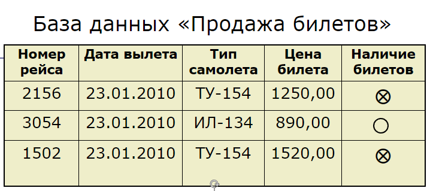
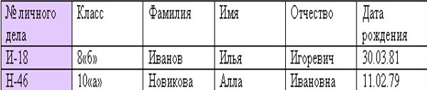
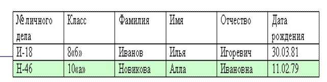
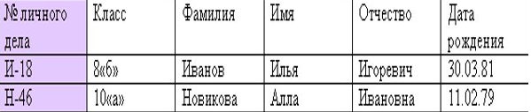
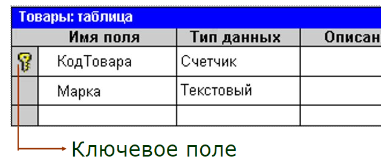
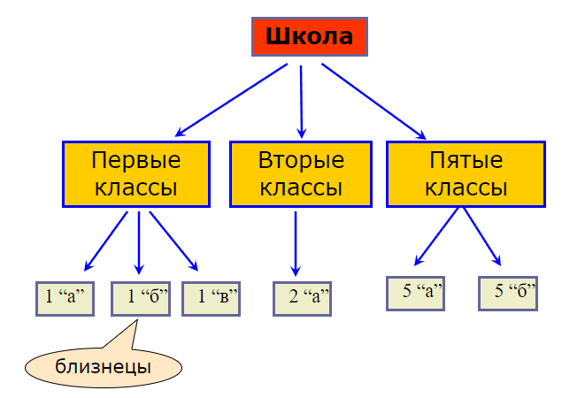
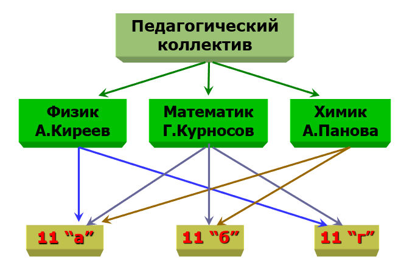

Базы данных
Что такое Базы Данных?
Базы данных используются во всех сферах человеческой деятельности – в науке, производстве. торговле, медицине, криминалистике, искусстве и т.д.
База данных – это совокупность систематизированных сведений об объектах окружающего нас мира по какой-либо области знаний.
Например:
- БД о системе продажи билетов;
- БД о работниках предприятия;
- БД документов в области уголовного права.
- БД книжного фонда библиотеки и т. д.
Вся эта информация может храниться на бумаге. Но современным средством хранения и обработки данных является компьютер.
Переход к компьютерному хранению информации дает много преимуществ:
- практически неограниченный объем данных в сочетании с оперативным доступом к ним;
- возможность логического контроля информации;
- автоматическое составление справок, отчетов, вывод необходимой информации по запросам пользователя.
Сама по себе БД не может обслуживать запросы пользователя по поиску информации. Она является только «информационным складом».
База данных – организованная совокупность данных, предназначенная для длительного хранения во внешней памяти ЭВМ, постоянного обновления и использования.
Классификация БД по характеру хранимой информации
- фактографические БД – содержат данные в краткой форме и строго фиксированных форматах. Это аналог бумажных карточек. Например: библиотечный каталог или каталог видеотеки.
- документальные БД – аналогом являются архивы документов. Например: архив судебных дел, архив исторических документов.
Классификация БД по способу хранения информации
- централизованные – все хранится на одном компьютере;
- распределенные – разные части БД хранятся на разных компьютерах.
Существует несколько различных структур информационных моделей и соответственно различных типов БД:
- табличные (реляционные);
- иерархические;
- сетевые;
Реляционные БД
Слово «реляционный» происходит от английского слова relation, что значит отношение, которые удобно представлять в виде таблиц.
 Каждая запись содержит информацию об отдельном объекте (одной книге в библиотеке, одном сотруднике предприятия).
Каждое поле - это определенная характеристика объектов (название книги, автор книги, фамилия сотрудника, год рождения).
Каждое поле таблицы имеет определенный тип.
Тип - это множество значений, которое поле может принимать в разных записях. От типа зависят те действия, которые можно производить с величиной.
Основные типы полей БД:
- Числовой тип имеют поля, значения которых могут быть только числами.
- Символьный тип имеют поля, в которых могут храниться символьные последовательности (слова, тексты, коды и др.)
- Тип «дата» имеют поля, содержащие календарные даты в форме день/месяц/год.
- Логический тип соответствует полю, которое может принимать два значения: «истина»-«ложь».
Для каждой таблицы реляционной БД должен быть определен главный ключ – имя поля или несколько полей, совокупность значений которых однозначно определяют запись.
Например: в библиотечной БД ключом может быть инвентарный номер книги.
Иерархические БД
В иерархической базе данных записи образуют особую структуру, называемую деревом.
При таком способе организации каждая запись может принадлежать только одному «родителю»
(более правильный термин – «владелец отношения»).
Объекты, имеющие одного «родителя», называются близнецами.
В сетевой базе данных связи разрешено устанавливать произвольным образом, без всяких ограничений.
Каждый элемент вышестоящего уровня может быть связан одновременно с любыми элементами следующего уровня.
Такая модель лучше всего соответствует реальной жизни.
Этапы создания БД
- «Проектирование БД» (теоретический этап работы). На этом этапе определяется какие таблицы будут входить в состав БД, структура таблиц (из каких полей, какого типа и размера будет состоять каждая таблица), какие поля будут выбраны в качестве первичных (главных) ключей каждой таблицы.
- «Создание структуры». С помощью конкретной СУБД описывается структура таблиц.
- «Ввод записей». Заполнение таблиц конкретной информацией.